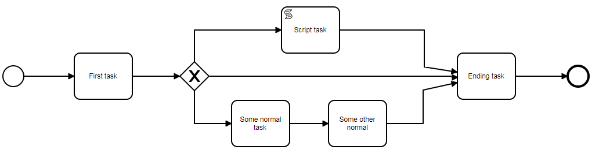

Workflow
Example diagram

XML file which represents above displayed image:
<?xml version="1.0" encoding="UTF-8"?>
<bpmn2:definitions xmlns:xsi="http://www.w3.org/2001/XMLSchema-instance" xmlns:bpmn2="http://www.omg.org/spec/BPMN/20100524/MODEL" xmlns:bpmndi="http://www.omg.org/spec/BPMN/20100524/DI" xmlns:dc="http://www.omg.org/spec/DD/20100524/DC" xmlns:di="http://www.omg.org/spec/DD/20100524/DI" xmlns:template="http://www.kitodo.com/template" id="sample-diagram" targetNamespace="http://bpmn.io/schema/bpmn" xsi:schemaLocation="http://www.omg.org/spec/BPMN/20100524/MODEL BPMN20.xsd">
<bpmn2:process id="Process_1" isExecutable="false" template:outputName="Template" >
<bpmn2:startEvent id="StartEvent_1">
<bpmn2:outgoing>SequenceFlow_0651lvf</bpmn2:outgoing>
</bpmn2:startEvent>
<bpmn2:task id="Task_0q73jg6" name="First task">
<bpmn2:incoming>SequenceFlow_0651lvf</bpmn2:incoming>
<bpmn2:outgoing>SequenceFlow_1uym1c8</bpmn2:outgoing>
</bpmn2:task>
<bpmn2:sequenceFlow id="SequenceFlow_0651lvf" sourceRef="StartEvent_1" targetRef="Task_0q73jg6" />
<bpmn2:task id="Task_02rdayp" name="Some normal task">
<bpmn2:incoming>SequenceFlow_0k77eji</bpmn2:incoming>
<bpmn2:outgoing>SequenceFlow_08oilfh</bpmn2:outgoing>
</bpmn2:task>
<bpmn2:task id="Task_1m88bz0" name="Some other normal">
<bpmn2:incoming>SequenceFlow_08oilfh</bpmn2:incoming>
<bpmn2:outgoing>SequenceFlow_10opxw7</bpmn2:outgoing>
</bpmn2:task>
<bpmn2:task id="Task_0dzgqnz" name="Ending task">
<bpmn2:incoming>SequenceFlow_10opxw7</bpmn2:incoming>
<bpmn2:incoming>SequenceFlow_171r48b</bpmn2:incoming>
<bpmn2:incoming>SequenceFlow_035iml6</bpmn2:incoming>
<bpmn2:outgoing>SequenceFlow_1ntrtjs</bpmn2:outgoing>
</bpmn2:task>
<bpmn2:endEvent id="EndEvent_1jlzp4p">
<bpmn2:incoming>SequenceFlow_1ntrtjs</bpmn2:incoming>
</bpmn2:endEvent>
<bpmn2:exclusiveGateway id="ExclusiveGateway_0dclvs2">
<bpmn2:incoming>SequenceFlow_1uym1c8</bpmn2:incoming>
<bpmn2:outgoing>SequenceFlow_0w0rghc</bpmn2:outgoing>
<bpmn2:outgoing>SequenceFlow_0k77eji</bpmn2:outgoing>
<bpmn2:outgoing>SequenceFlow_035iml6</bpmn2:outgoing>
</bpmn2:exclusiveGateway>
<bpmn2:sequenceFlow id="SequenceFlow_0w0rghc" sourceRef="ExclusiveGateway_0dclvs2" targetRef="Task_0w8342u" />
<bpmn2:sequenceFlow id="SequenceFlow_0k77eji" sourceRef="ExclusiveGateway_0dclvs2" targetRef="Task_02rdayp" />
<bpmn2:sequenceFlow id="SequenceFlow_1uym1c8" sourceRef="Task_0q73jg6" targetRef="ExclusiveGateway_0dclvs2" />
<bpmn2:sequenceFlow id="SequenceFlow_08oilfh" sourceRef="Task_02rdayp" targetRef="Task_1m88bz0" />
<bpmn2:sequenceFlow id="SequenceFlow_10opxw7" sourceRef="Task_1m88bz0" targetRef="Task_0dzgqnz" />
<bpmn2:sequenceFlow id="SequenceFlow_171r48b" sourceRef="Task_0w8342u" targetRef="Task_0dzgqnz" />
<bpmn2:sequenceFlow id="SequenceFlow_1ntrtjs" sourceRef="Task_0dzgqnz" targetRef="EndEvent_1jlzp4p" />
<bpmn2:scriptTask id="Task_0w8342u" name="Script task" template:scriptName="Script">
<bpmn2:incoming>SequenceFlow_0w0rghc</bpmn2:incoming>
<bpmn2:outgoing>SequenceFlow_171r48b</bpmn2:outgoing>
</bpmn2:scriptTask>
<bpmn2:sequenceFlow id="SequenceFlow_035iml6" sourceRef="ExclusiveGateway_0dclvs2" targetRef="Task_0dzgqnz" />
</bpmn2:process>
<bpmndi:BPMNDiagram id="BPMNDiagram_1">
non relevant shape information
</bpmndi:BPMNDiagram>
</bpmn2:definitions>